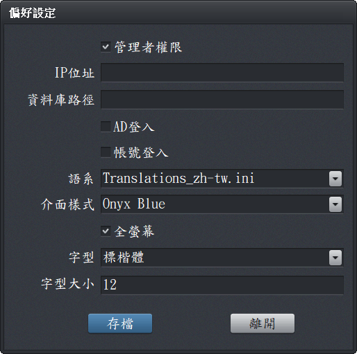

偏好設定
使用者可以設定軟體，讓軟體符合使用者的偏好及需求，例如語系、字體大小....等
-
本軟體開發時，是以下列環境進行設定，如果您將作業環境進行適當調整或直接參考下列設定，會得到較最好的軟體操作介面
- 縮放：100%
- 顯示器幕解析度：1920 x 1080
- 主視窗中間有一條分隔線，可以進行左右調整
- 設定檔：在InfoRec資料夾的InfoRec.conf有更詳細的說明及功能。
-
功能說明
- 管理者權限解：單機版或網路版管理者的預設權限。
- IP位址：(網路版才需設定)
- 資料庫設定：(網路版才需設定)
- AD登入：(網路版並且有AD才能設定)：
- 帳號登入：用密碼控管軟體(註冊後才能使用。預設帳號：ADMIN 預設密碼：admin
- 語系：已提供繁體中文、簡體中文、英文等3種，使用者可以自行增加或通知軟體管理者增設。
- 介面樣式：標準(windows)或暗色系(Onyx Blue)
- 全螢幕：軟體預設為1366x763(筆電)，最佳為1920x1080)。
- 字型：請依需要自行設定。
-
字型大小：請依需要自行設定，建議為12 ~14大小即可。
-
假設使用者windows作業系統「縮放與版面配置」變更文字...大小為100%，字型大小為12或14是最好的情況。
- 如果「縮放與版面配置」「變更文字...大小」為125%, 那文字大小設為1~102會是較好的選擇。
- 備註：在主視窗中，系統會依文件的特性自動調整左右視窗的大小，但您仍然弟用手動的方式調整分隔線的方式，調整左右視窗大小。

文件類型管理視窗